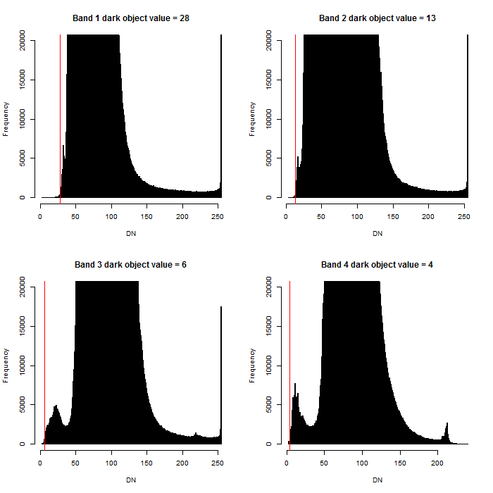

MSScost
MSS images with units of scaled digital numbers are converted to units of surface reflectance using the COST method (Chavez, 1996). The "Lhaze" parameter or dark object value per band is estimated by the histogram method (Chavez, 1988) using an automated algorithm (Figure 1).
Figure 1. Demonstration of the automated histogram-based dark object value estimation. The red line indicates the estimated dark object value per band.
The DN image and the estimated DN-based dark object values are converted to top-of-atmosphere radiance using equation 1.
Lλ = "gain" * QCAL + "bias"
Equation 1. Conversion from DN to top-of-atmosphere radiance using "gain" and "bias" parameters from the LPGS metadata file, according to USGS recommendation for conversion from DN to TOA radiance.
The TOA radiance dark object values are subtracted from the TOA radiance image per band. The TOA radiance image is then converted to surface reflectance using Equation 2.

Equation 2. Conversion from top-of-atmosphere radiance to surface reflectance.
Chavez Jr, P. S. (1988). An improved dark-object subtraction technique for atmospheric scattering correction of multispectral data. Remote Sensing of Environment, 24(3), 459-479.
Chavez, P. S. (1996). Image-based atmospheric corrections-revisited and improved. Photogrammetric Engineering and Remote Sensing, 62(9), 1025-1035.